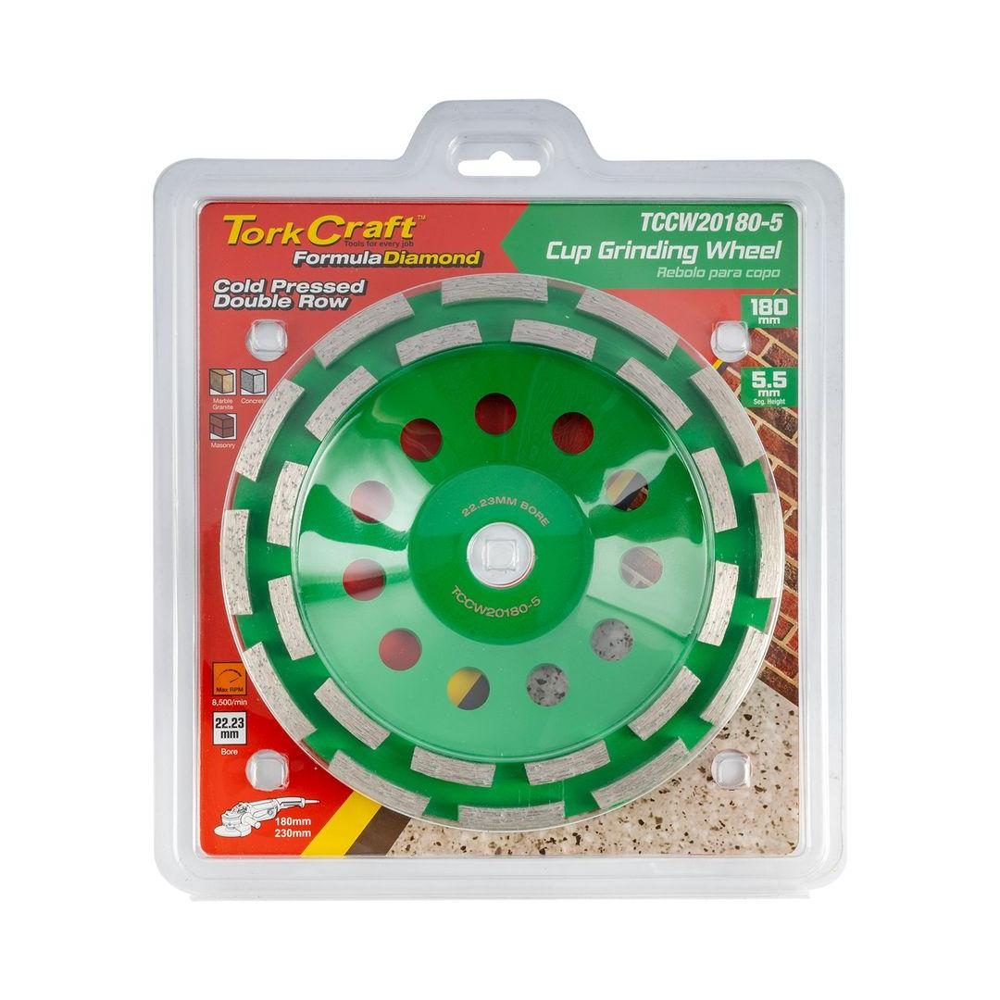
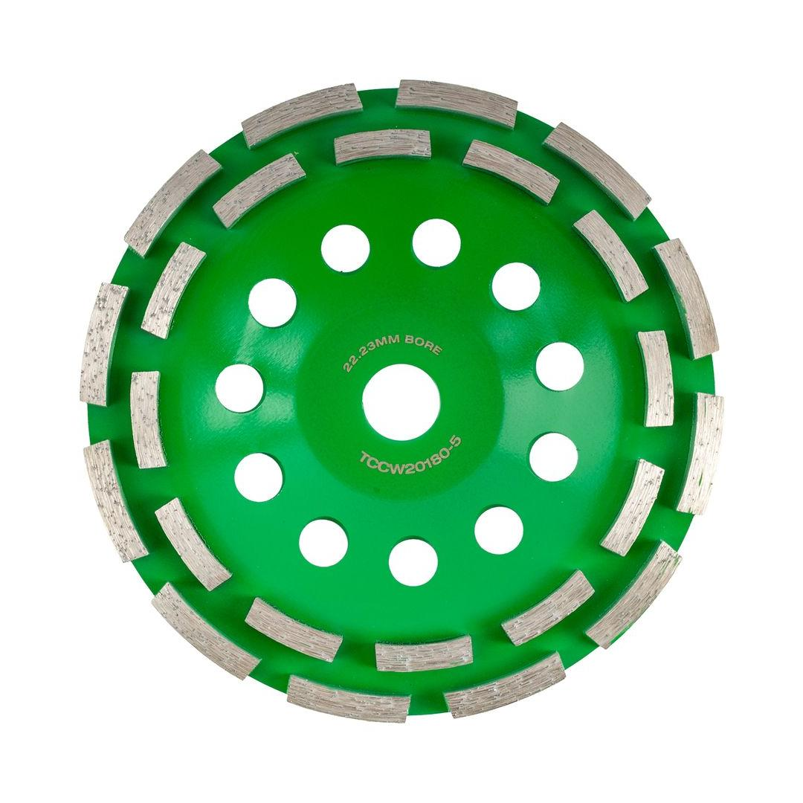

TCCW20180-5


Cup Diameter: 180mm
Arbor: 22.23mm
Max RPM: 8 500
Segment Configuration: Double Row
Classification: Green (Contractor)
This large, 180mm double-row diamond cup wheel, with a 22.23mm bore, is a powerful and cost-effective tool for extensive surface grinding. The cold-pressed construction ensures a durable bond between the diamond segments and the steel body, while the double-row design provides a highly aggressive and fast grinding action. This makes it exceptionally effective for heavy stock removal on concrete, masonry, and stone surfaces. Ideal for use with larger angle grinders, it is perfect for professional contractors and serious DIY enthusiasts tackling big jobs like leveling large floors, removing stubborn coatings, or preparing substantial surfaces for new finishes. This wheel offers a perfect balance of performance and affordability for demanding applications.
Application: